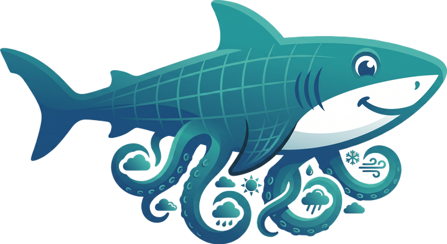

This Privacy Policy describes how the sharktopus open-source software (the “Tool”) handles data when you use it to fetch Global Forecast System (GFS) weather data via your own cloud account. sharktopus is distributed under the MIT License and runs locally on your machine; there is no hosted service, no central server operated by the maintainers, and no user database.
This policy applies to:
deploy/gcloud, deploy/aws, and
deploy/azure that provision compute resources in your own cloud account.sharktopus --auth browser to deploy to
Google Cloud Run.It does not cover third-party services (Google Cloud, AWS, Azure, NOAA NOMADS, NOAA Open Data on S3/GCS, etc.), which have their own terms and privacy policies.
--auth browser)
When you run sharktopus's Google Cloud deploy with --auth browser, a
standard Google “installed application” OAuth flow opens in your default browser and
asks you to grant the https://www.googleapis.com/auth/cloud-platform scope.
Google then returns an OAuth refresh token to the Tool.
Where it goes: the refresh token is written to
~/.cache/sharktopus/gcloud_token.json on your local machine
with mode 0600 (owner-only read/write). It is never transmitted to the
project maintainers, never written to logs, and never shared with any third party
other than Google (which issued it).
The token lets the Tool provision and invoke resources in the Google Cloud project
you specify (typically your own) on your behalf: enabling APIs, creating a small
Cloud Run service, creating the sharktopus-invoker service account, and
minting short-lived ID tokens to invoke that service. The Tool does not read Gmail,
Drive, Calendar, Contacts, or any other Google surface — the cloud-platform
scope is restricted to Google Cloud Platform resources only.
You can revoke access at any time from
myaccount.google.com/permissions
and delete the local cache with rm ~/.cache/sharktopus/gcloud_token.json.
For AWS and Azure deploys, sharktopus uses the credentials you have already configured
locally (~/.aws/credentials, az login session, or environment
variables). It does not upload these credentials anywhere; it uses them in-process to
call each vendor's SDK.
GFS data is public, and sharktopus downloads it from official NOAA mirrors (NOMADS, the NOAA Open Data AWS/GCS buckets) or, when deployed, through your own cloud worker. No personal data is involved in these transfers.
The Google OAuth application used by sharktopus is registered under the GCP project
sharktopus-oauth and is currently in the process of Google's OAuth
verification review. During the unverified period, you may see an “unverified app”
warning in the consent screen; this is Google's standard pre-verification notice and
does not indicate a security issue with the Tool itself.
sharktopus is a scientific research tool. It is not directed at children and does not knowingly collect any data from anyone, including children under 13.
If this policy changes materially, we will update the “last updated” date above and note the change in the project's CHANGELOG.md. Because sharktopus is software you install, you control when you upgrade and therefore when any policy change starts applying to your copy.
Questions or concerns about this policy:
sharktopus.convect@gmail.com, or open an issue at
github.com/sharktopus-project/sharktopus/issues.